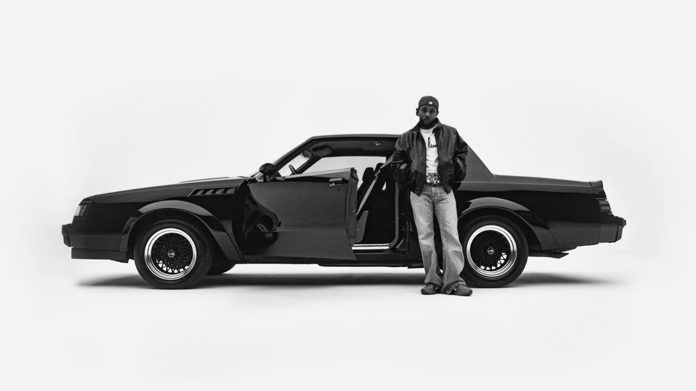

A capa do álbum GNX, lançado por Kendrick Lamar em 22 de novembro de 2024, é uma imagem em preto e branco que transmite simplicidade e profundidade simbólica. Nela, Kendrick aparece encostado em um Buick GNX preto — um modelo esportivo raro de 1987, ano de seu nascimento — com as mãos nos bolsos, olhando diretamente para a câmera.
O Buick GNX, sigla para "Grand National Experimental", é um carro lendário entre os entusiastas de muscle cars, conhecido por sua potência e estilo marcante. A escolha desse veículo para a capa não é apenas estética; ela simboliza a conexão de Kendrick com suas raízes e sua jornada pessoal. Segundo o The College of New Jersey Signal News, Lamar escolheu o Buick GNX para representar sua nostalgia e celebrar suas conquistas recentes.